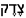

Tzedek
BookmarkletInstall a real bookmarklet, not a page link.
If a saved bookmark just opens a Tzedek page, the browser was given a normal URL instead of the bookmarklet loader. Use this installer to save the JavaScript launcher that injects Tzedek into the page you are reviewing.
Tzedek Bookmarklet
How to use it
- Keep this installer page open.
- Drag the Tzedek Bookmarklet button to your bookmarks bar, or copy the code below into a new bookmark URL.
- Browse to the page you want to audit.
- Click the saved bookmark. Tzedek should inject into that page instead of navigating away.
If clicking the saved bookmark still navigates to a page, inspect the bookmark URL in your browser. It must start with javascript:.